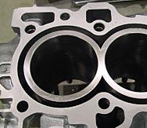
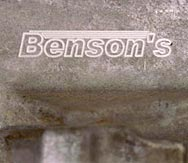

Why choose Benson sleeves.....
What makes a Benson signature series sleeved block better? Several sleeve manufacturers have working designs. Each manufacturer comes about their design by different means. They all work to some degree. All sleeves are made out of the same strength and quality nodular iron as it a necessary material to seat rings. Therefore sleeve strength is determined by bore size and bore centerlines. No matter how fat the sleeve may be, the weak spot is between the cylinders. Nothing is secret about that.
What sets Benson apart from everyone else is the precision of his machine work and his method of installation. First, Benson has no employees, so no rookie or uninterested machinist touches your block. Only Benson. His method of installation insures that a sleeve can never drop, shift or leak. You never have to align bore your block with his sleeves because of the block core shifting. This is because he takes less material from the block during installation than other sleeve designs require. That keeps the block stronger by default and does not let the main saddles move, thus causing the need for an expensive align bore.
The important thing is his name is on every block and there are no excuses. He uses a sleeve designed by himself and has them made by a private manufacturer to his specs. "ALL MY SLEEVES ARE MADE IN AMERICA". It has been perfected over the last 10 years to work flawlessly. The real secret is in the person that does the install and the precision quality they demand of themselves. This is what sets Benson way apart from the others.